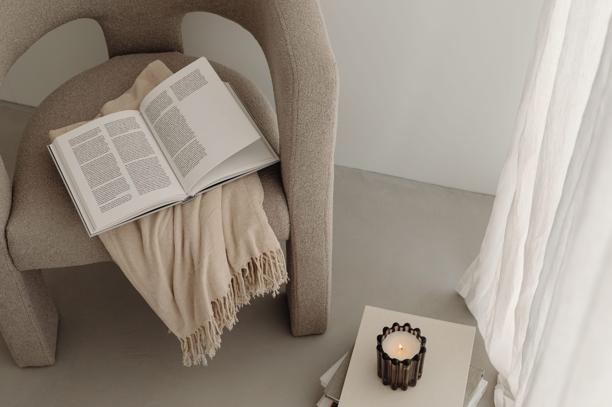

14.10.2023 / 3 MIN CZYTANIA
Jesienne wnętrza i design: Jak stworzyć ciepłą i przytulną atmosferę w domu
Jesień to czas, kiedy dni stają się krótsze, a temperatura na zewnątrz zaczyna spadać. To także idealny moment, aby wprowadzić do naszego wnętrza trochę ciepła i przytulności. Jako architekt, wiem, jak ważne jest to, aby
Czytaj artykuł ↗